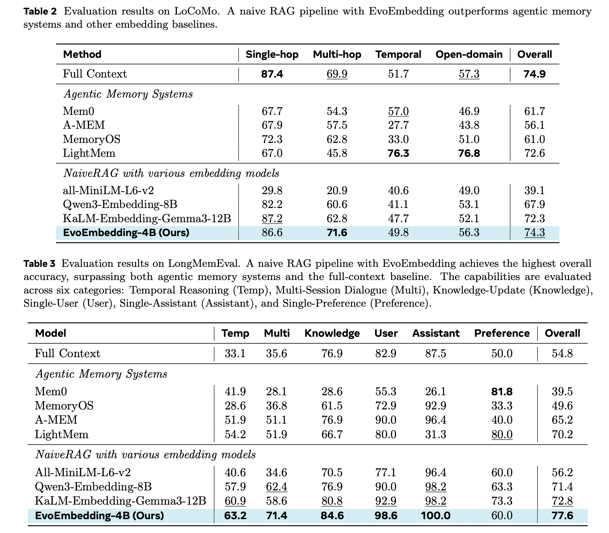
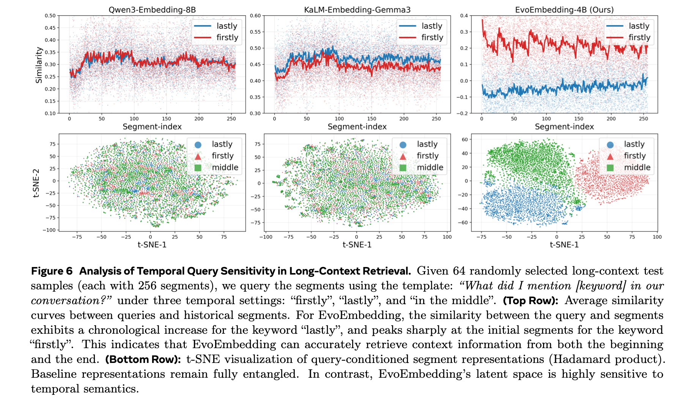

EvoEmbedding: Evolvable Embedding
for Long-Context Retrieval
Abstract
This paper introduces EvoEmbedding, a novel embedding model that generates evolvable representations for retrieval. It is tailored for long-context scenarios, where information is temporally dynamic, entangled, and requires continuous state tracking. Our design is simple: EvoEmbedding maintains a continuously updated latent memory as it sequentially processes inputs, and uses it alongside the raw content to jointly generate evolvable embeddings. Given the same instruction, the resulting representation matches distinct content depending on the current context, going beyond static semantic search. To support this, we construct EvoTrain-180K, a diverse dataset for the joint optimization of latent memory and retrieval.
Extensive experiments show that our model not only outperforms larger-scale specialists (e.g., Qwen3-Embedding-8B and KaLM-Embedding-Gemma3-12B) across a range of long-context retrieval benchmarks, but also generalizes well to downstream tasks (e.g., personalization) with contexts 10× longer than its training window. Notably, EvoEmbedding seamlessly integrates into agentic workflows to boost performance. For instance, a naive RAG pipeline equipped with our model surpasses dedicated agentic memory systems.
Superior Performance across Retrieval & Generation

Figure 1: Performance comparison across long-context retrieval and generation tasks. The EvoEmbedding family achieves superior results across 10 benchmarks. Notably, our model excels in handling dynamic contexts (e.g., long-term personalization), outperforming both established static and large-scale models.
Methodology
Unlike standard static embeddings, EvoEmbedding jointly performs memory evolution and representation generation in parallel. We introduce a latent memory queue to track continuous state updates without massive overhead.

Figure 3: Overview of EvoEmbedding. (Left) Memory Evolution: The LLM compresses the segment and integrates the previous memory to update a FIFO latent memory queue. (Right) Representation Generation: Historical latent memory is combined with the current segment to generate a contextually evolvable embedding for retrieval.
Surpassing Agentic Memory Systems
Remarkably, a standard naive RAG pipeline powered by EvoEmbedding-4B, utilizing only the retrieved Top-8 segments, consistently surpasses complex agentic memory architectures (e.g., Mem0, LightMem, A-MEM).

Tables 2 & 3: Evaluation results on LoCoMo and LongMemEval. A naive RAG pipeline with EvoEmbedding achieves the highest overall accuracy, surpassing both agentic memory systems and other embedding baselines, while incurring zero explicit memory construction token cost at test time.
Temporal Query Sensitivity
EvoEmbedding inherently understands temporal order. Baseline representations remain fully entangled, but EvoEmbedding's latent space cleanly separates representations into distinct, non-overlapping clusters corresponding to their chronological positions.

Figure 6: Analysis of Temporal Query Sensitivity. (Top Row): Average similarity curves. EvoEmbedding successfully decouples temporal intents (e.g., "firstly" peaks at initial segments, "lastly" exhibits chronological increase). (Bottom Row): t-SNE visualization confirms that EvoEmbedding’s latent space is highly sensitive to temporal semantics.
Citation
@article{nie2026evoembedding,
title={Evolvable Embedding for Long-Context Retrieval},
author={Nie, Chang and Fu, Chaoyou and Shan, Caifeng},
journal={arXiv preprint},
year={2026}
}